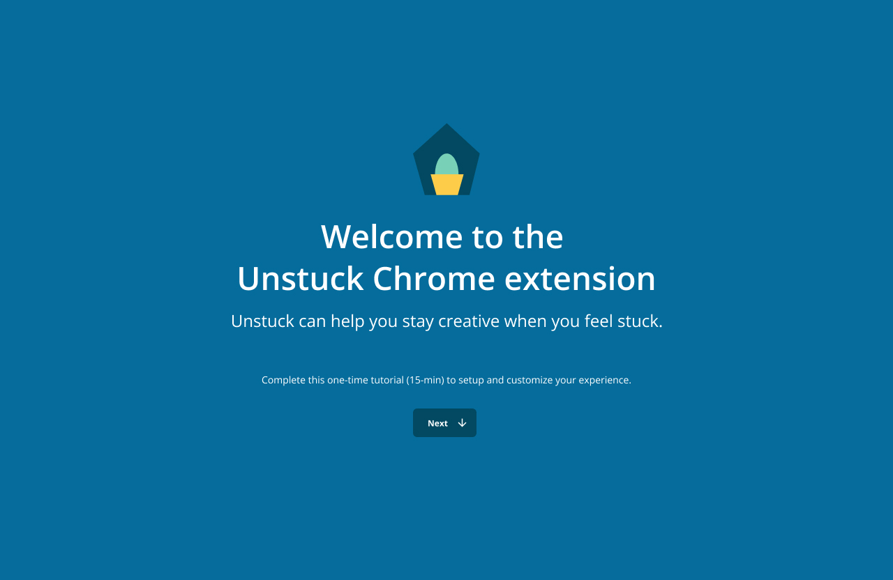
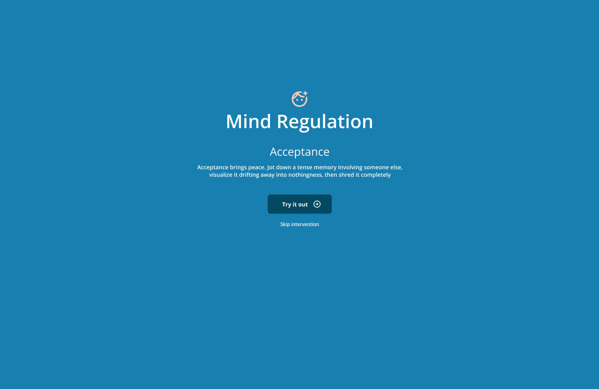
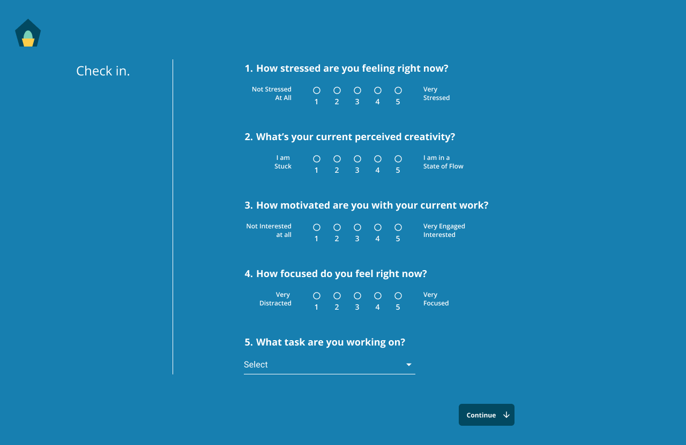
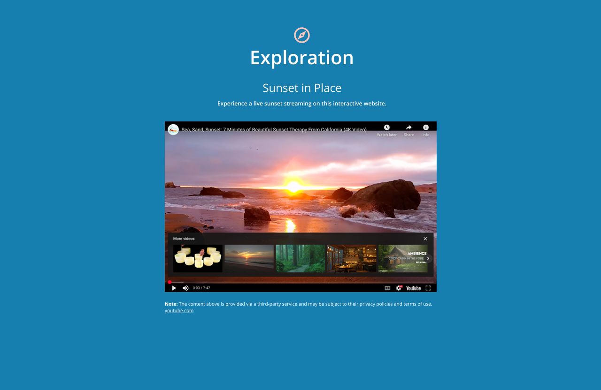
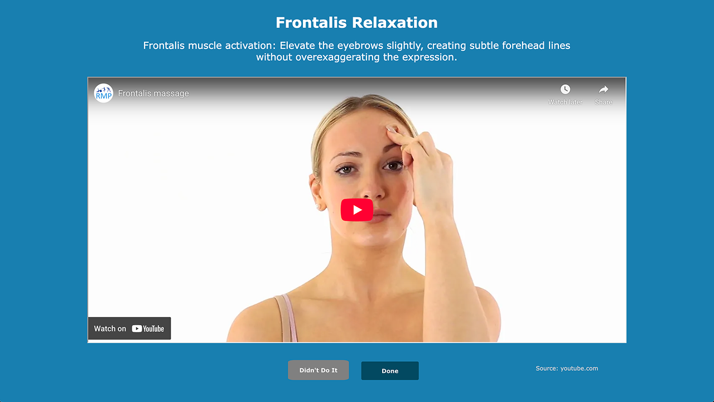
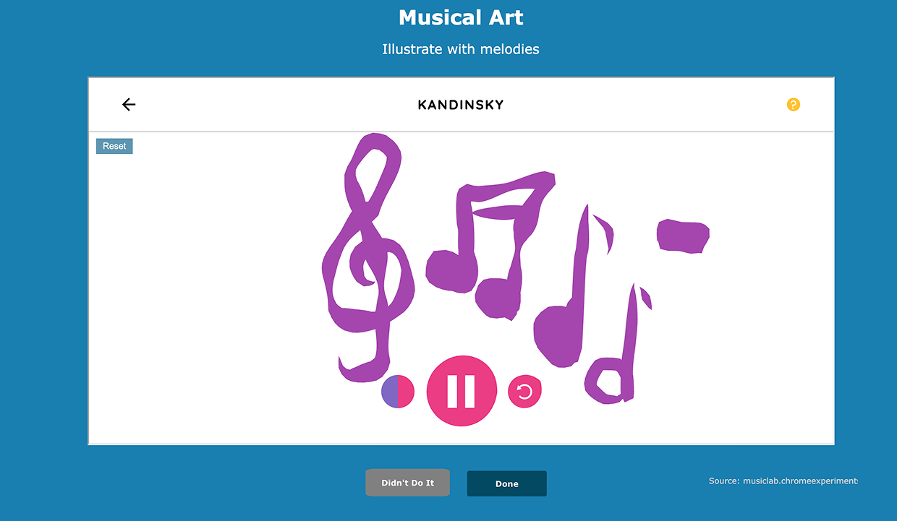

Just-in-Time Chrome Extension
A browser-based tool that delivers creative interventions directly within the browser — fitting naturally into existing workflows without requiring participants to leave their work context.
ML-Driven Personalization
The more you use Unstuck, the smarter it gets. The system learns from your interaction history to identify which types of interventions work best for you — adapting recommendations over time to match your personal creativity and regulation patterns.
Core Screens
- Invitation & Onboarding — Structured email invitation flow followed by guided onboarding screens that configure the extension for the participant's work context
- Nudges & Notifications — Contextual nudges at the right moment, reminder notifications throughout the day, and a night-time mode that silences alerts
- Intervention Checkout — A brief post-intervention screen that captures how creative the participant is feeling in the moment
- Feedback Submission — Qualitative feedback on any intervention, feeding a continuous loop that informs both the ML model and the research team
The study consists of two parts:
- Part One — Pre-Survey + tool installation + one week of testing the tool in a real work context
- Part Two — Post-Survey to measure outcomes and behavioral change
Participant Experience
Participants download a Google Chrome plugin and use it to choose from online or offline creative activities. Pre- and post-surveys take approximately 30–40 minutes each. Daily tool interactions are brief — around 3 minutes — and the full study runs 1 to 2 weeks. The tool passively collects non-identifiable contextual signals including mouse/trackpad movement, keyboard typing speed, and web browser URL roots (not full URLs), to understand behavior without compromising privacy.
Grounded in a three-stage behavioral model — progressing from identifying behavioral insights, to developing models of behavior, to improving behavior with technology.
Key Qualitative Themes
Eight intervention clusters emerged from qualitative analysis of how creative professionals self-regulate stuckness:
- C1 Mindful and Emotional Regulation 26%
- C2 Cognitive Reframing and Inspiration 19%
- C5 Structured Tools and Task Management 17%
- C3 Rest and Acceptance 15%
- C4 Movement and Physical Reset 12%
- C6 Social Connection 6%
- C7 Non-Engagement 3%
- C8 Other / Unique 2%





